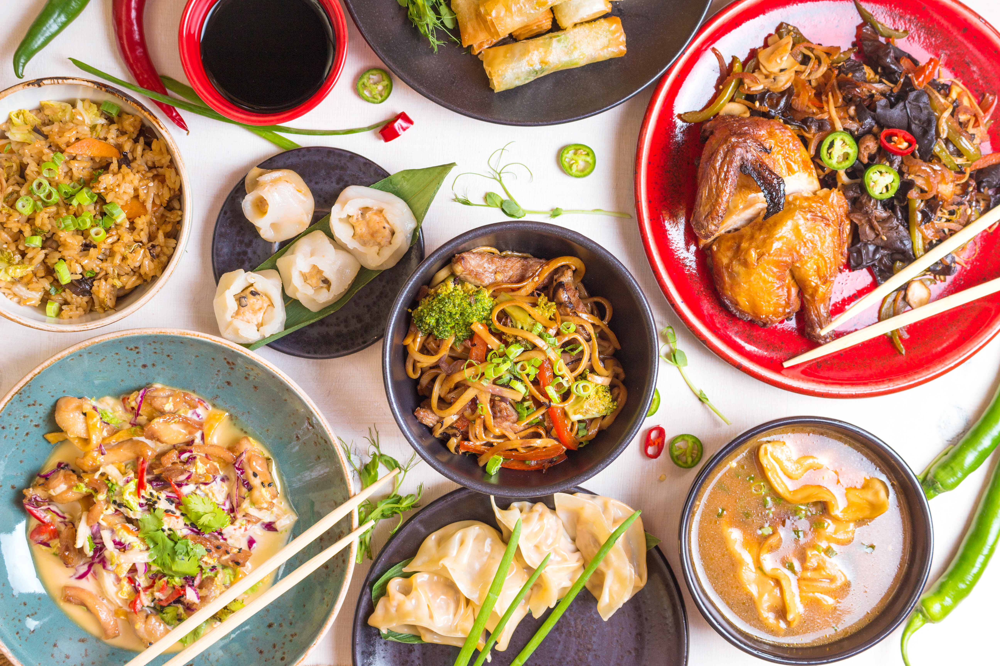
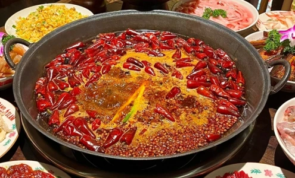
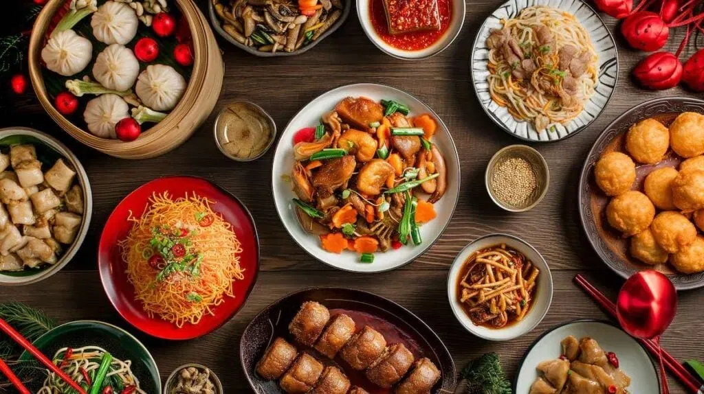

เมนูยอดฮิต 招牌菜

ตัวอย่าง เช่น หม้อไฟเสฉวน,ติ่มซำ,
หมูสามชั้นผัดซอสเปรี้ยวหวาน,เสี่ยวหลงเปา

1.หม้อไฟเสฉวน
เป็นอาหารจีนที่มีชื่อเสียงในเรื่องของรสชาติที่เผ็ดร้อน
และให้ความรู้สึกชาที่ลิ้นจาก พริกไทยเสฉวน
(ฮวาเจียว) และเครื่องเทศนานาชนิด

2.ติมซ่ำ
วัฒนธรรมการทานอาหารมื้อสายของชาวกวางตุ้ง
ประกอบด้วยของนึ่งและทอดชิ้นเล็กๆ
หลากหลายชนิด
3.หมูสามชั้นผัดซอสเปรี้ยวหวาน
เมนูที่รวมความมันนุ่มของหมูสามชั้นเข้ากับ
ซอสรสชาติกลมกล่อมเปรี้ยวนิดหวานหน่อยเป็น
กับข้าวที่ทานได้ทั้งครอบครัว
4.เสี่ยวหลงเปา
เกี๊ยวมีน้ำซุปด้านในจากเซี่ยงไฮ้
เป็นเมนูที่ได้รับความนิยมสูงทั้งในและต่างประเทศ